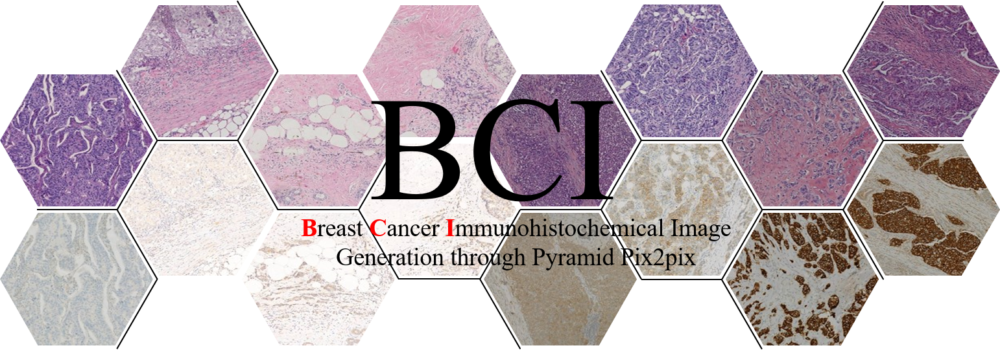
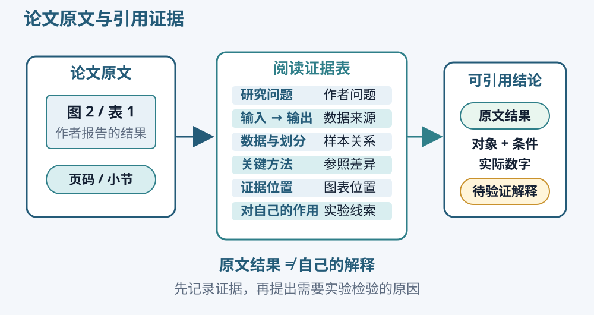

病理图像与配对
组织、切片与图块
组织由细胞及其周围成分组成。细胞核、细胞质、细胞之间的排列和周围间质，都可能在病理图像中留下可见结构。组织经过固定、制片、染色等处理后，可以在显微镜下观察，也可以用数字扫描设备保存为图像。
数字全切片图像常写作 WSI，即 whole-slide image。它覆盖一张切片中的较大组织范围，尺寸通常远大于模型一次能够处理的输入。研究者因此将它切成较小的图块，英文是 patch。模型看到的一个 256×256 图块，只是原切片中的一个局部。
一个患者可能有多个组织块和多张切片，一张切片又能产生许多图块。因此，患者数、切片数和图块数需要分别记录。例如，增加同一张切片中的裁剪位置会增加图块数量，却不会增加独立患者。理解这些层级，才能判断训练和测试是否真正使用了不同来源的样本。
H&E 的形态信息
H&E 是苏木精—伊红染色，英文为 hematoxylin and eosin staining。苏木精相关染色使细胞核等结构常呈蓝紫色，伊红使许多细胞质和间质成分呈粉红色。实际颜色深浅还会受到组织、制片、染色及扫描条件影响。
观察 H&E 时，先找到蓝紫色较密集的区域，再看周围粉红色组织、空隙和组织边缘。试着用可见特征描述一处位置，例如“右侧核较密集”“中央有一片较大的空隙”。这类描述能让另一位同学找到同一区域，也适合写入后面的图像检查记录。
图像分辨率会改变能观察到的细节。把较大的组织图块整体缩小，保留了原来的覆盖范围，但细胞边缘可能变得模糊；直接裁出小窗口，则改变了观察范围。处理数据时应同时记录原始尺寸、模型输入尺寸和采用的缩放或裁剪方式。
IHC、HER2 与显色
免疫组织化学简称 IHC，英文为 immunohistochemistry。它利用抗体识别组织中的特定抗原，再通过检测系统把相关位置转化为可观察的信号。抗原常是研究关注的蛋白。选择不同抗体和检测目标，就会得到不同含义的 IHC 图像。
本项目的目标是 HER2-IHC。HER2 是人表皮生长因子受体 2，是一种与细胞生长信号有关的受体蛋白。常见明场 IHC 中，DAB 显色呈棕色，苏木精复染提供蓝色或蓝紫色的核背景。HER2、DAB 和 RGB 分别指目标蛋白、显色体系及数字图像的颜色表示，阅读论文时要分清这三个层面。
棕色出现在哪里、强度如何、是否与相应组织结构对应，都值得观察。HER2 的病理评价涉及细胞膜染色等信息，单纯统计所有棕色像素的数量只能描述一种图像现象。后面的图像指标用于评价预测与参考的相似程度，不能直接换算成 HER2 临床分级。

上图用于辨认两种染色的外观。取得官方原始配对图后，先确认两栏的染色名称和样本编号，再寻找较大的组织边缘、空隙及核密集区域。颜色差异属于两种染色的特点；空间位置是否对应，则关系到配对图像能否用于训练。
配对、配准与参考图
配对表示两张图被组织成对应的输入和目标。配准表示通过空间变换，使两张图中的组织结构尽量对齐。两个文件名相同可以帮助配对，但不能证明组织位置已经对齐。旋转、尺度差异、局部拉伸、组织折叠和缺失，都可能影响空间对应关系。
例如，H&E 中的一个空隙位于图像中央，而 IHC 中对应空隙略微偏右。模型可能根据 H&E 画出合理边界，逐像素评价仍会得到较大误差。查看配对时，至少选择几组图像，把大结构和局部位置分别放大比较，记录编号、位置和看到的现象。
真实 IHC 来自实验染色与成像，是训练和评价的参考；生成 IHC 来自模型计算。图片标题统一写清“H&E 输入”“真实参考 HER2-IHC”“生成 HER2-IHC”，报告和海报沿用相同名称。观察到一张图“颜色像 IHC”以后，还需要检查信号是否出现在参考中的相应位置。
同一切片的重复处理和相邻切片的对应关系不同。数据说明中怎样描述采集与配准，就怎样记录，不能仅凭“配对数据”四个字推断两张图在每个细胞位置上完全一致。
BCI 数据与样本划分
BCI 提供乳腺癌 H&E 与 HER2-IHC 的配对图像，是本项目的数据来源。先阅读数据集论文和作者的数据说明，记下论文名称、下载来源、取得日期、文件组织方式以及使用要求。保存原始文件，后续裁剪、缩放和选取子集另存为处理记录。
打开 BCI 官方仓库，按 download_dataset.md 中的链接取得配对图像，并阅读 BCI 使用许可。解压后先浏览官方训练和测试目录，定位同编号的 H&E 与 IHC；若某一下载格式将两图左右拼接，先依据作者说明确认哪一侧为 H&E，再记录拆分方法。下载说明、论文和实际文件组织应逐项核对，不凭目录名推断患者信息。
训练集用于调整参数，验证集用于选择模型设置和权重，测试集用于最终评价。如果能够取得可靠的患者标识，应按患者分组；只有可靠切片标识时，按切片核查。同一组的图块不能同时出现在训练和测试中。来源未给出患者或切片对应关系时，保留官方划分并如实记录当前掌握的是图块层级，不能把文件名前缀直接当成患者编号。
检查配对时，先统计输入和目标是否一一对应，再查看尺寸、重复文件和空间关系。最后形成一份可重复使用的清单，至少包含配对编号、两张图的路径、所属集合、原始尺寸，以及能够核实的患者或切片标识。后续不同实验共用这份清单，避免方法比较时悄悄换了样本。
在 Kaggle 知识练习中，观察官方染色预览，用数值图练习同步变换，用人工清单检查集合交叉。练习后，针对自己取得的原始配对图像整理数据说明表，写清输入、目标、样本单位、来源和划分依据。实现目标项目时继续使用这些信息。
文献检索与阅读
检索问题与关键词
检索前先把问题拆成输入、目标和方法。本项目的输入词包括 H&E、hematoxylin and eosin；目标词包括 HER2、ERBB2、immunohistochemistry；方法词包括 virtual staining、image-to-image translation、deep learning。不同文章可能使用不同术语，保留同义词能减少漏检。
打开 PubMed，在搜索框中先输入 "virtual staining" AND HER2。浏览标题和摘要，确认结果研究的是哪一种输入及目标。需要扩大范围时，可以尝试 hematoxylin AND immunohistochemistry AND "deep learning"；需要把检索限制在题名和摘要时，可以使用 "virtual staining"[Title/Abstract] AND (HER2[Title/Abstract] OR ERBB2[Title/Abstract])。每次修改只调整一项条件，并记录它怎样改变了结果。
在 Google Scholar 中，可以搜索 "virtual staining" HER2，也可以使用论文完整题名定位原始文章。找到 BCI 后，再搜索 "Breast Cancer Immunohistochemical Image Generation through Pyramid Pix2pix"，核对题名、作者和发表信息。使用“被引用”查看后续研究，使用论文参考文献寻找较早的方法与数据来源。检索平台给出的排序只帮助寻找文章，具体结论需要阅读全文确认。
记录平台、日期、检索式、保留文章和保留理由。例如，“摘要明确使用 H&E 预测 HER2-IHC，因此保留”比“标题看起来相关”更有用。如果结果主要是未染色组织生成 H&E，就需要加入 HER2 或 immunohistochemistry 等目标词。
论文类型与阅读顺序
综述适合了解常见任务和方法；数据集论文重点解释数据怎样取得、组织和划分；原创方法论文说明模型及验证实验；软件文档用于核对具体实现。预印本和正式发表版本可能存在差异，保存时记录版本和日期。
本章先读 BCI 数据集与方法文章，弄清任务、配对数据和主要实验。再读 U-Net 的结构说明，联系已经做过的分割项目理解编码器、解码器和跳跃连接。希望继续学习对抗训练时，再读 pix2pix，即 Image-to-Image Translation with Conditional Adversarial Networks，重点辨认输入、生成器、判别器和损失之间的关系。
第一次阅读先看摘要、主要图表和图注，写下“研究输入是什么、输出是什么、主要证据是什么”。第二次选择与自己项目最接近的一项实验，阅读数据划分、预处理、比较条件和指标。第三次把需要引用的结论与原文位置对应起来，留下页码、章节或图表编号。
遇到公式，先写变量含义，再看计算比较了哪些对象。遇到不熟悉的术语，优先查文章自己的定义。读完一篇文章的目标是能够解释一项有证据的结论，以及它会怎样影响自己的数据检查或实验设计。
论文阅读证据表
阅读记录要能支持后续写作。只记“方法效果好”容易忘记比较对象与条件；记录具体数据、方法差异和图表位置，写报告时才能准确引用。
| 记录项 | 应写内容 |
|---|---|
| 文献信息 | 完整题名、作者、年份、期刊或会议、DOI 或稳定标识 |
| 研究问题 | 作者希望回答的具体问题 |
| 输入与输出 | 图像怎样获得，预测目标是什么 |
| 数据与划分 | 样本单位、规模、来源及训练和测试关系 |
| 关键方法 | 相比参照方法增加或改变的部分 |
| 证据位置 | 图表编号、页码或小节，及它实际支持的结论 |
| 对自己的作用 | 据此需要检查的数据问题、可比较的设置或值得补充的实验 |

把作者报告的结果和自己的想法分开记录。例如，“表中报告方法 A 的 MAE 较低”属于原文结果；“这种差异可能与配准有关”如果来自自己的判断，就写为待验证解释。文献中的图块数、病人数和切片数按原文单位记录，不互相替换。
完成三份简短阅读记录：一份 BCI 数据与方法，一份 U-Net 结构，一份自己检索到的虚拟染色或配准研究。每份至少定位一张图或一张表，并写出它支持什么。选择第三篇时，先确认能取得全文并能核对实验细节。
文献管理与写作
Zotero 条目与引用
在 Zotero 左侧文库中新建集合，命名为“H&E–IHC 学习”。安装浏览器连接器后，在论文页面点击保存按钮；也可以点击 Zotero 工具栏中的“通过标识符添加条目”，输入 DOI、PMID 等标识。直接拖入 PDF 时，要检查它是否已经关联到完整题录条目。
选中条目，逐项核对题名、作者顺序、年份、期刊或会议、卷期页码及 DOI。会议论文不要误记为期刊文章；预印本不要填写成尚未确认的正式发表版本。将 PDF 放在对应条目下，在笔记中记录代码和数据页面。使用 dataset、model、registration、evaluation 等简短标签，也可以用中文标签，只要含义一致即可。
发现同一篇文章出现两次时，先比较 DOI、题名和版本，再在“重复条目”中合并。保留正式发表信息时，也要确认已有笔记和附件没有遗漏。将论文中的关键段落高亮，并在批注里补上自己的解释，比保存很多未读 PDF 更便于查找。
在 Word 中把光标放到需要引用的句子后，通过 Zotero 选项卡的 Add/Edit Citation 插入引文。在文末使用 Add/Edit Bibliography 生成参考文献表；增加、删除或调整正文引用后，使用 Refresh 更新。最后逐条检查引文是否对应支持这句话的原文，核对参考文献表中的题名与作者信息。编号格式由软件处理，内容对应关系仍需要阅读确认。
文献背景与学习记录
用三到五个短段落介绍准备完成的 H&E–IHC 项目。先解释两种染色及目标蛋白，再说明配对预测任务，接着介绍与计划有关的方法，最后提出一个自己能够检验的问题。依赖文献的具体事实后面放上对应引用，自己的计划使用将要执行的表述。
保存检索记录、三份阅读证据表和带引用的背景说明。再选择一对有来源的 H&E/IHC 图像，为它写一段图注，交代染色类型、配对编号、来源和观察位置。这些材料会用于学习海报，也能帮助后续同学理解你使用的数据。
完成本章后，应当能够看着一组配对图解释输入与目标，找到一项方法的原始出处，并指出论文中支撑某个结论的具体图表。下一章将学习配对图像重建和评价，再由你独立搭建目标项目。